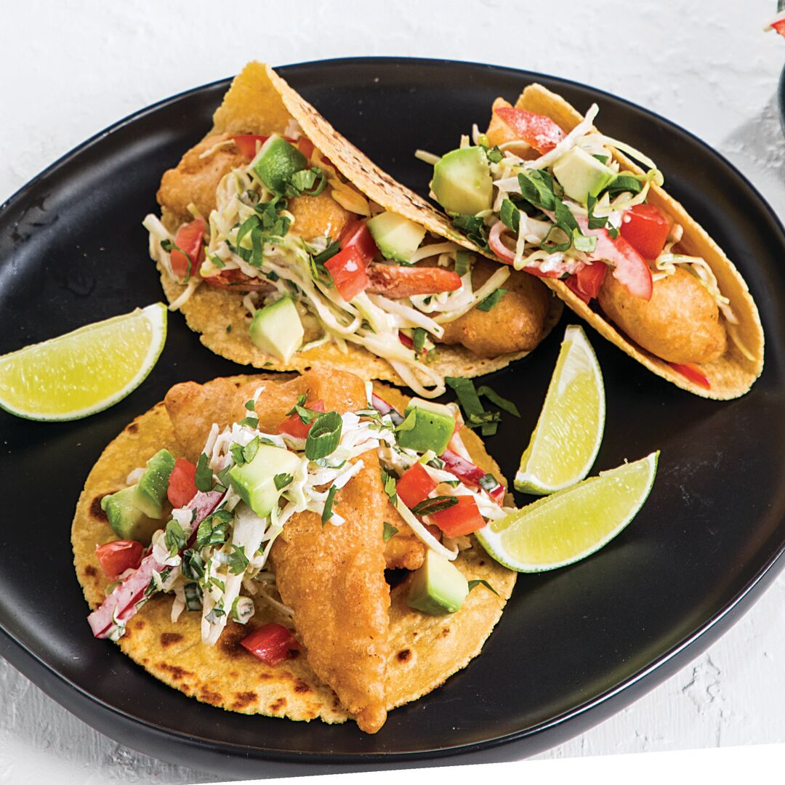

Fish Tacos

Picture of fish Tacos
This recipe was the first one I saw when I clicked on the link. I
personally do not like fish tacos but since it was the first recipe I saw
I ran with it.
This paragraph is meant to add another paragraph on the page but it is
basically nothing. Please continue to the recipe ingredients and recipe
steps to creating the dish.
Ingredients
- 6 tomatoes, diced
- 1 small onion, diced
- ½ cup chopped fresh cilantro
-
2 tablespoons canned diced jalapeno peppers, or more to taste (juice
reserved)
- ½ teaspoon garlic salt
- ½ lime, juiced
Steps
-
Step 1 Mix tomatoes, onion, cilantro, jalapeno peppers, 1 tablespoon
juice from jalapeno peppers, and garlic salt in a bowl; squeeze 1/2 lime
over salsa fresca. Cover bowl with plastic wrap and refrigerate while
preparing fish.
-
Step 2 Toss coleslaw mix with ranch dressing in a bowl; set aside for
flavors to blend.
-
Step 3 Heat oil in a deep-fryer or large saucepan to 350 degrees F (175
degrees C).
-
Step 4 Stir batter mix and beer together in a bowl. Wrap corn tortillas
in wet paper towels and set aside.
-
Step 5 Dip cod in the batter mix; fry coated cod in batches in the hot
oil until cod is cooked through and coating is brown, 4 to 5 minutes.
Remove cod with a slotted spoon and drain on a paper towel-lined plate.
-
Step 6 Microwave corn tortillas on high until warmed, about 1 minute.
-
Step 7 Stack two tortillas on a plate; top with fish, a sprinkle of
Mexican cheese, coleslaw mixture, salsa fresca, and a squeeze from lime
wedge. Drizzle with chile-garlic sauce. Repeat with remaining
ingredients.